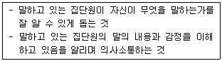
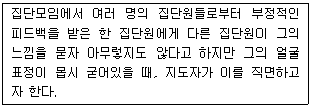
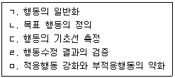
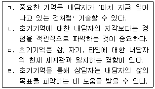
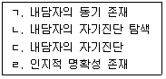
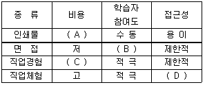
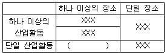
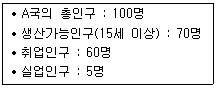
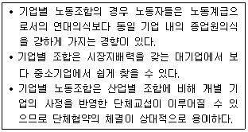
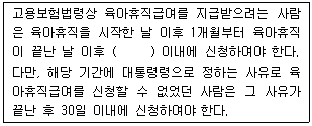

1과목: 직업상담학
1. Ginzberg가 구분한 진로선택 과정 중 현실기의 하위단계가 아닌 것은?
2. 다음 설명에 해당하는 집단상담 기법은?

3. 특성-요인 상담의 특징으로 틀린 것은?
4. 내담자의 종결 준비도를 알아볼 수 있는 것으로 적합하지 않은 것은?
5. Williamson의 직업문제 분류범주에 포함되지 않는 것은?
6. 교류분석적 상담에서 피부접촉, 표정, 태도, 감정, 언어, 기타 여러 형태의 행동을 통해 상대방에 대한 반응을 알리는 인간인식의 기본 단위는?
7. 다음 사례에서 직면기법에 가장 가까운 반응은?

8. 상담 중기과정의 활동에 대한 설명으로 틀린 것은?
9. 성공적인 상담결과를 위한 내담자 목표의 특징이 아닌 것은?
10. 경력 상담시 내담자의 가족이나 선조들의 직업 특징에 대한 시각적 표상을 얻기 위해 도표를 만드는 방식은?
11. 생애진로사정의 구조 중 전형적인 하루에서 검토되어야 할 성격차원은?
12. 정신역동상담의 주요 기술이 아닌 것은?
13. 행동수정 프로그램의 절차를 바르게 나열한 것은?

14. 비밀보장 예외의 원칙과 가장 거리가 먼 것은?
15. Adler 이론의 주요 개념인 초기 기억에 관한 설명으로 모두 고른 것은?

16. 상담과정에 관한 설명으로 틀린 것은?
17. 직업상담에서 이루어지는 일반적인 상담과정의 사정단계를 바르게 나열한 것은?

18. 개인주의 상담의 상담기법이 아닌 것은?
19. 직업상담의 기법 중 비지시적 상담 규칙이 아닌 것은?
20. 형태주의적 상담과 관련된 성격이론에서 신념, 행동양식, 감정 및 평가의 무비판적인 수용은?
2과목: 직업심리학
21. 직업전환을 원하는 내담자를 상담할 때 일차적으로 고려해야 할 사항과 가장 거리가 먼 것은?
22. Lofquis와 Dawis의 직업적응이론에서 성격양식 차원에 관한 설명으로 틀린 것은?
23. 조직에서의 스트레스를 매개하거나 조절하는 요인들 중 개인속성이 아닌 것은?
24. 심리검사의 윤리적 문제와 관계없는 것은?
25. 솔직하고, 성실하며, 말이 적고, 고집이 세면서 직선적인 사람들은 Holland의 어떤 작업환경에 잘 어울리는가?
26. 고용노동부에서 실시하는 일반직업적성검사가 측정하는 영역이 아닌 것은?
27. Selye가 주장한 일반적응증후군（Gneral Adaptation Syndrome）의 3가지 단계가 아닌 것은?
28. 직무분석 대상에 대한 전문가 집단의 자유로운 토의를 통해 직무분석을 하는 방법은?
29. 인지적 정보처리의 주요 전제가 아닌 것은?
30. 스트레스의 예방 및 대처방안으로 틀린 것은?
31. 타당도 중에서 수치(예 : 타당도 계수)로 나타낼 수 있는 것은?
32. 직무분석의 용도가 아닌 것은?
33. 기초통계치 중 명명척도로 측정된 자료에서는 파악할 수 없고 서열척도 이상의 척도로 측정된 자료에서만 파악할 수 있는 것은?
34. 다음 중 실업자를 위한 실업관련 프로그램과 가장 거리가 먼 것은?
35. 진로선택에 관한 사회학습이론에서 개인의 진로발달 과정과 관련이 없는 요인은?
36. Super의 직업발달 5단계를 바르게 나열한 것은?
37. 직무만족에 대한 2요인이론의 설명으로 틀린 것은?
38. Holland의 모형에서 “어떤 쌍들은 다른 유형의 쌍들보다 공통점을 더 많이 가지고 있다”는 것을 나타내는 것은?
39. 일반적으로 가장 높은 신뢰도 계수를 기대할 수 있는 것은?
40. 일반적성검사(GATB)에 관한 설명으로 가장 적합한 것은?
3과목: 직업정보론
41. 다음 중 적극적인 노동시장 정책으로 볼 수 없는 것은?
42. 한국표준산업분류(2008)에서 분류의 범위에 대한 설명으로 사실과 다른 것은?
43. 국가기술자격의 기사 응시자격으로 가정 거리가 먼 것은?
44. 워크넷에서 제공하는 직업선호도검사 L형과 S형의 공통적인 하위검사는?
45. 직업능력개발계좌제에 대한 설명으로 옳은 것은?(관련 규정 개정전 문제로 여기서는 기존 정답인 2번을 누르면 정답 처리됩니다. 자세한 내용은 해설을 참고하세요.)
46. ‘시장조사분석가’에 대한 설명으로 가장 거리가 먼 것은?
47. 다음 중 한국표준직업분류상 직업에 속하는 활동은?
48. 한국표준산업분류(2008)의 산업분류기준에 해당되지 않는 것은?
49. 고용동향관련 주요 개념으로 틀린 것은?(오류 신고가 접수된 문제입니다. 반드시 정답과 해설을 확인하시기 바랍니다.)
50. 직무분석 방법 중 데이컴법(DACUM Method)에 관한 설명으로 틀린 것은?
51. 다음 중 ‘생활체육지도자’ 자격과 관련이 가장 낮은 것은?
52. 한국표준직업분류에서 직업에 대한 설명으로 가장 거리가 먼 것은?
53. 워크넷에서 제공하는 채용정보 중 기업형태별 검색에 해당하지 않는 것은?
54. 공공직업정보와 비교하여 민간직업정보의 특성에 관한 설명으로 옳은 것은?
55. 다음 직업정보 유형별 특징에 관한 표의 ( )안에 들어갈 알맞은 것은?

56. 국가기술자격 검정의 방법으로 사실과 다른 것은?
57. 다음 중 국가자격시험의 시행기관이 다른 것은?
58. 한국직업사전에는 각 직업별로 환경조건을 분석하여 제시한다. 다음의 직업명세 항목 가운데 작업환경에 해당하는 것은?
59. 한국표준산업분류(2008)의 통계단위는 생간활동과 장소의 동질성의 차이에 따라 다음과 같이 구분된다. ( )안에 들어갈 가장 알맞은 것은?

60. 직업정보의 처리에 대한 설명으로 가장 거리가 먼 것은?
4과목: 노동시장론
61. 실업-결원곡선(Beveridge Curve)에 관한 설명으로 틀린 것은?
62. 사용자의 자유로운 채용이 허락되나 일단 채용된 후, 일정한 견습기간이 지나 정식 종업원이 되면 노동조합에 반드시 가입해야 하는 숍 제도는?
63. 다음 중 기혼여성의 경제활동참가 증가요인이 아닌 것은?
64. 후방굴절형 노동공급곡선이 의미하는 것은?
65. 완전경쟁기업의 단기 노동수요곡선은 다음 중 어느 곡선의 일부인가?
66. 생산물시장과 노동시장이 완전경쟁이고, A기업의 시간당 임금은 3,000원이다. A기업에서 생산된 제품의 가격은 500원이고, 현 고용수준에서 최종적으로 고용된 근로자가 생산하는 제품의 수는 시간당 5개라 할 때 A기업의 이윤극대화를 위한 고용수준의 결정은?
67. 노동조합 조직 부문의 임금인상이 노조 비조직 부문에 미치는 효과에 대한 설명 중 틀린 것은?
68. 아래 자료에서 A국의 실업률 계산공식으로 맞는 것은?

69. 임금형태에 관한 설명 중 잘못된 것은?
70. 실업률과 물가상승률 간 역의 상관관계를 나타내는 곡선은?
71. 우리나라 노동조합의 주된 조직형태는?
72. 고정급제 임금형태가 아닌 것은?
73. 기업별 노동조합에 대한 설명으로 맞는 것은 모두 몇 개 인가?

74. 임금격차의 원인으로서 통계적 차별(Statistical Discrimination)이 일어나는 경우는?
75. 노동수요곡선이 이동하는 이유가 아닌 것은?
76. 수요부족실업에 해당되는 것은?
77. 경기침체에도 불구하고 실업률이 크게 높아지지 않았다면, 그 이유로 가장 적합한 것은?
78. 실질임금의 정의로 옳은 것은?
79. 우리나라의 연령별, 성별 고용구조에 대한 설명으로 옳은 것은?
80. 최저임금제 실시에 따른 효과로 볼 수 있는 것은?
5과목: 노동관계법규
81. 고용정책기본법상 고용정책 기본계획에 직접적으로 포함되는 내용이 아닌 것은?
82. 고용정책기본법상 이 법에서 실현하고자 하는 목적을 달성하기 위하여 일정한 임무를 부여하고 있는 주체가 아닌 것은?
83. 헌법상 근로자의 노동3권에 해당하지 않는 것은?
84. 남녀고용평등과 일 · 가정 양립 지원에 관한 법률상 명예고용평등감독관에 대한 내용으로 옳지 않은 것은?
85. 근로자직업능력개발법상 기능대학에 관한 설명으로 옳은 것은?
86. 직업안정법에 관한 설명으로 옳은 것은?
87. 근로자직업능력개발법상 직업능력개발훈련에 관한 설명으로 옳은 것은?(문제 오류로 가답안 발표시 2번으로 정답이 발표되었으나, 확정답안 발표시 2, 3번이 정답 처리 되었습니다. 여기서는 2번을 누르면 정답 처리 됩니다.)
88. 근로기준법상 평균임금으로 산정하지 않는 것은?
89. 근로자직업능력개발법상 직업능력법령상 직업능력개발훈련시설을 설치할 수 있는 공공단체의 범위에 해당하지 않는 것은?
90. 직업안정법상 구인 · 구직의 신청에 관한 설명으로 옳은 것은?
91. 남녀고용평등과 일 · 가정 양립 지원에 관한 법률상 직장 내 성희롱 또는 고객 등에 의한 성희롱과 관련된 사업주의 조치로 옳지 않은 것은?
92. 근로기준법상 경영상 이유로 의한 해고의 제한에 관한 설명으로 틀린 것은?
93. 고용보험법상 실업급여에 관한 처분에 대한 심사 및 재심사의 청구에 관한 설명으로 틀린 것은?
94. 근로기준법에 명시된 휴일 또는 휴가로 볼 수 없는 것은?
95. 고용상 연령차별금지 및 고령자고용촉진에 관한 법률에 관한 설명으로 틀린 것은?
96. 다음 ( )에 알맞은 것은?

97. 고용상 연령차별금지 및 고령자 고용촉진에 관한 법률상 기준고용률 이상으로 고령자를 고용하도록 노력해야 하는 사업주는?
98. 남녀고용평등과 일 · 가정 양립지원에 관한 법률에 부합되는 규정은?
99. 고용상 연령차별금지 및 고령자고용촉진에 관한 법령상 임대업의 고령자 기준고용률은?
100. 헌법상 근로기본권에 관한 설명으로 틀린 것은?